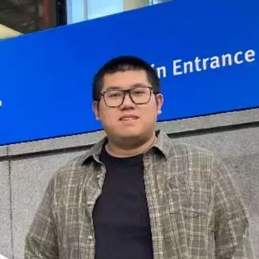
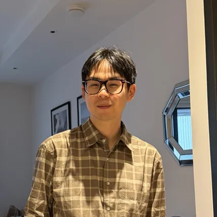
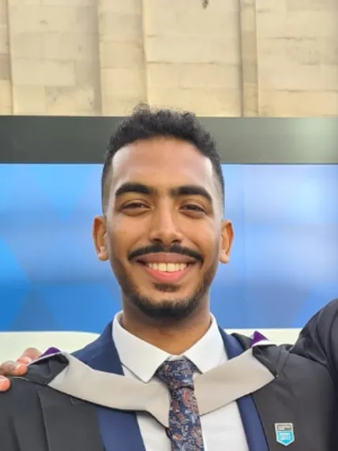
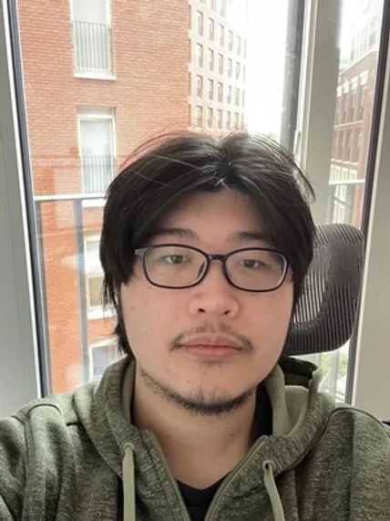
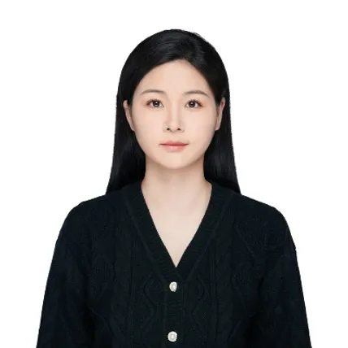
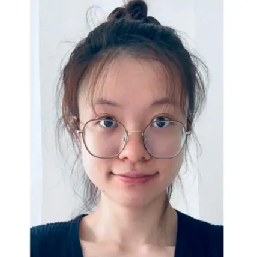
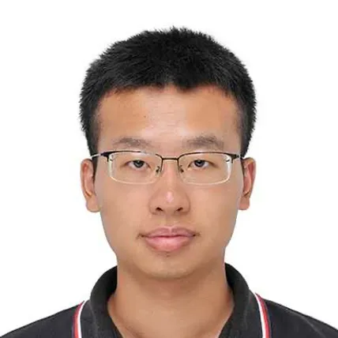
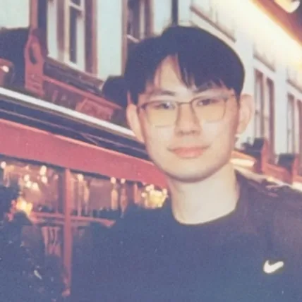

People
Faculty

Prof. Christos Bouganis
Professor of Intelligent Digital Systems; Director of iDSL; Director of Undergraduate Studies (EEE)
Imperial profile · Email
Postdoctoral researchers

Lei Xun
Hardware Acceleration for Machine Learning

Jiaxu Liu (Michael)
Machine Learning
PhD candidates

Guoxuan Xia
Efficient Uncertainty Estimation

Omar Sharif
Hardware Acceleration, Graph Processing, Bayesian Inference, SLAM

Keran Zheng
Hardware Acceleration for Machine Learning

Mingzhu Shen* (co-supervised)
Machine Learning

Xinye Cao (Violet)
Hardware Acceleration for Machine Learning

Yanjie Huang (Paul)
Hardware Acceleration for Machine Learning

Xiaoan He (Jasper)
Hardware Acceleration for Machine Learning
* co-supervised
Previous members
- Mário Lopes Ferreira, former Research Assistant, now at NEC Telecom Modus
Graduated PhD students
- Dr. Benjamin Biggs 2025
- Dr. Petros Toupas 2024
- Dr. Zhewen Yu 2024
- Dr. Alexander Montgomerie 2024
- Dr. Giorgos Zampokas 2024
- Dr. Ben Chua 2024
- Dr. Diederik Vink 2023 · now at nCompass Technologies
- Dr. Alexandros Kouris 2023 · now at Samsung AI Research
- Dr. Sina Boroumand 2023 · now at Apple
- Dr. Aditya Rajagopal 2022 · now at nCompass Technologies
- Dr. Nur Ahmadi 2020 · now at Institut Teknologi Bandung
- Dr. Manolis Vasileiadis 2020 · now at Sportion
- Dr. Konstantinos Boikos 2019 · now at ARM
- Dr. Stylianos I. Venieris 2018 · now at Samsung AI Research
- Dr. Shuanglong Liu 2017 · now at Hunan Normal University
- Dr. Michalis Vavouras 2017 · now at u-blox
- Dr. Grigoris Mingas 2015 · now at EasyJet
- Dr. Chuan Cheng 2015
- Dr. Jian Xiong Liu (co-supervisor) 2015
- Dr. Rui Duarte 2014
- Dr. Adam Powel 2014
- Dr. Anastasios Drosou (co-supervisor) 2013
- Dr. Bin Li 2013
- Dr. Markos Papadonikolakis 2012
- Dr. Saiprasert Chalermpol 2010
- Dr. Walid Al-Atabany (co-supervisor) 2010
- Dr. Maria Angelopoulou 2009